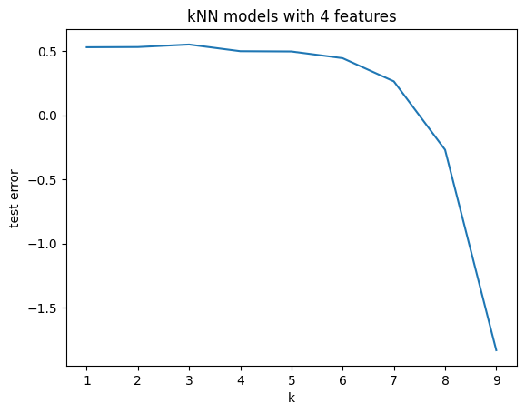

import pandas as pd
import numpy as np
from sklearn.pipeline import Pipeline
from sklearn.preprocessing import StandardScaler, OneHotEncoder, PolynomialFeatures
from sklearn.linear_model import LinearRegression
from sklearn.model_selection import train_test_split
from sklearn.metrics import r2_scoreames = pd.read_csv("/content/AmesHousing (2).csv")
ames| Order | PID | MS SubClass | MS Zoning | Lot Frontage | Lot Area | Street | Alley | Lot Shape | Land Contour | ... | Pool Area | Pool QC | Fence | Misc Feature | Misc Val | Mo Sold | Yr Sold | Sale Type | Sale Condition | SalePrice | |
|---|---|---|---|---|---|---|---|---|---|---|---|---|---|---|---|---|---|---|---|---|---|
| 0 | 1 | 526301100 | 20 | RL | 141.0 | 31770 | Pave | NaN | IR1 | Lvl | ... | 0 | NaN | NaN | NaN | 0 | 5 | 2010 | WD | Normal | 215000 |
| 1 | 2 | 526350040 | 20 | RH | 80.0 | 11622 | Pave | NaN | Reg | Lvl | ... | 0 | NaN | MnPrv | NaN | 0 | 6 | 2010 | WD | Normal | 105000 |
| 2 | 3 | 526351010 | 20 | RL | 81.0 | 14267 | Pave | NaN | IR1 | Lvl | ... | 0 | NaN | NaN | Gar2 | 12500 | 6 | 2010 | WD | Normal | 172000 |
| 3 | 4 | 526353030 | 20 | RL | 93.0 | 11160 | Pave | NaN | Reg | Lvl | ... | 0 | NaN | NaN | NaN | 0 | 4 | 2010 | WD | Normal | 244000 |
| 4 | 5 | 527105010 | 60 | RL | 74.0 | 13830 | Pave | NaN | IR1 | Lvl | ... | 0 | NaN | MnPrv | NaN | 0 | 3 | 2010 | WD | Normal | 189900 |
| ... | ... | ... | ... | ... | ... | ... | ... | ... | ... | ... | ... | ... | ... | ... | ... | ... | ... | ... | ... | ... | ... |
| 2925 | 2926 | 923275080 | 80 | RL | 37.0 | 7937 | Pave | NaN | IR1 | Lvl | ... | 0 | NaN | GdPrv | NaN | 0 | 3 | 2006 | WD | Normal | 142500 |
| 2926 | 2927 | 923276100 | 20 | RL | NaN | 8885 | Pave | NaN | IR1 | Low | ... | 0 | NaN | MnPrv | NaN | 0 | 6 | 2006 | WD | Normal | 131000 |
| 2927 | 2928 | 923400125 | 85 | RL | 62.0 | 10441 | Pave | NaN | Reg | Lvl | ... | 0 | NaN | MnPrv | Shed | 700 | 7 | 2006 | WD | Normal | 132000 |
| 2928 | 2929 | 924100070 | 20 | RL | 77.0 | 10010 | Pave | NaN | Reg | Lvl | ... | 0 | NaN | NaN | NaN | 0 | 4 | 2006 | WD | Normal | 170000 |
| 2929 | 2930 | 924151050 | 60 | RL | 74.0 | 9627 | Pave | NaN | Reg | Lvl | ... | 0 | NaN | NaN | NaN | 0 | 11 | 2006 | WD | Normal | 188000 |
2930 rows × 82 columns
13.2.5 Practice Activity
Consider four possible models for predicting house prices: 1. Using only the size and number of rooms 2. Using size, number of rooms, and building type 3. Using size and building type, and their interaction 4. Using a 5-degree polynomial on size, a 5-degree polynomial on number of rooms, and also building type
Set up a pipeline for each of these four models
Then, get predictions on the test set for each of your pipelines, and compute the root mean square error. Which model performed best?
from sklearn.pipeline import make_pipeline
lr_pipeline = make_pipeline(
StandardScaler(),
LinearRegression()
)
lr_pipelinePipeline(steps=[('standardscaler', StandardScaler()),
('linearregression', LinearRegression())])In a Jupyter environment, please rerun this cell to show the HTML representation or trust the notebook. On GitHub, the HTML representation is unable to render, please try loading this page with nbviewer.org.
Pipeline(steps=[('standardscaler', StandardScaler()),
('linearregression', LinearRegression())])StandardScaler()
LinearRegression()
lr_pipeline = Pipeline(
[("standardize", StandardScaler()),
("linear_regression", LinearRegression())]
)
lr_pipelinePipeline(steps=[('standardize', StandardScaler()),
('linear_regression', LinearRegression())])In a Jupyter environment, please rerun this cell to show the HTML representation or trust the notebook. On GitHub, the HTML representation is unable to render, please try loading this page with nbviewer.org.
Pipeline(steps=[('standardize', StandardScaler()),
('linear_regression', LinearRegression())])StandardScaler()
LinearRegression()
X = ames[["Gr Liv Area", "TotRms AbvGrd"]]
y = ames["SalePrice"]
X_train, X_test, y_train, y_test = train_test_split(X,y)
lr_pipeline_fitted = lr_pipeline.fit(X_train, y_train)
y_preds = lr_pipeline_fitted.predict(X_test)
r2_score(y_test, y_preds)0.5428233151716674new_house = pd.DataFrame(data = {"Gr Liv Area": [889], "TotRms AbvGrd": [6]})lr_pipeline_fitted.predict(new_house)array([101677.17376321])from sklearn.compose import ColumnTransformer
ct = ColumnTransformer(
[
("dummify", OneHotEncoder(sparse_output = False), ["Bldg Type"]),
("standardize", StandardScaler(), ["Gr Liv Area", "TotRms AbvGrd"])
],
remainder = "drop"
)
ctColumnTransformer(transformers=[('dummify', OneHotEncoder(sparse_output=False),
['Bldg Type']),
('standardize', StandardScaler(),
['Gr Liv Area', 'TotRms AbvGrd'])])In a Jupyter environment, please rerun this cell to show the HTML representation or trust the notebook. On GitHub, the HTML representation is unable to render, please try loading this page with nbviewer.org.
ColumnTransformer(transformers=[('dummify', OneHotEncoder(sparse_output=False),
['Bldg Type']),
('standardize', StandardScaler(),
['Gr Liv Area', 'TotRms AbvGrd'])])['Bldg Type']
OneHotEncoder(sparse_output=False)
['Gr Liv Area', 'TotRms AbvGrd']
StandardScaler()
lr_pipeline = Pipeline(
[("preprocessing", ct),
("linear_regression", LinearRegression())]
)
lr_pipelinePipeline(steps=[('preprocessing',
ColumnTransformer(transformers=[('dummify',
OneHotEncoder(sparse_output=False),
['Bldg Type']),
('standardize',
StandardScaler(),
['Gr Liv Area',
'TotRms AbvGrd'])])),
('linear_regression', LinearRegression())])In a Jupyter environment, please rerun this cell to show the HTML representation or trust the notebook. On GitHub, the HTML representation is unable to render, please try loading this page with nbviewer.org.
Pipeline(steps=[('preprocessing',
ColumnTransformer(transformers=[('dummify',
OneHotEncoder(sparse_output=False),
['Bldg Type']),
('standardize',
StandardScaler(),
['Gr Liv Area',
'TotRms AbvGrd'])])),
('linear_regression', LinearRegression())])ColumnTransformer(transformers=[('dummify', OneHotEncoder(sparse_output=False),
['Bldg Type']),
('standardize', StandardScaler(),
['Gr Liv Area', 'TotRms AbvGrd'])])['Bldg Type']
OneHotEncoder(sparse_output=False)
['Gr Liv Area', 'TotRms AbvGrd']
StandardScaler()
LinearRegression()
X = ames.drop("SalePrice", axis=1)
y = ames["SalePrice"]
X_train, X_test, y_train, y_test = train_test_split(X,y)
lr_fitted = lr_pipeline.fit(X_train, y_train)ct_fitted = ct.fit(X_train)
ct.transform(X_train)array([[ 1. , 0. , 0. , ..., 0. ,
-0.79852209, -0.28793428],
[ 1. , 0. , 0. , ..., 0. ,
-0.70901319, -0.28793428],
[ 1. , 0. , 0. , ..., 0. ,
-0.8588433 , -1.57108159],
...,
[ 1. , 0. , 0. , ..., 0. ,
0.09656691, -0.92950793],
[ 1. , 0. , 0. , ..., 0. ,
-0.35876097, -0.28793428],
[ 1. , 0. , 0. , ..., 0. ,
1.87701567, 1.63678667]])ct.transform(X_test)array([[ 1. , 0. , 0. , ..., 0. ,
0.20553426, 0.35363937],
[ 1. , 0. , 0. , ..., 0. ,
0.35731022, 0.99521302],
[ 0. , 0. , 0. , ..., 0. ,
0.09267522, -0.28793428],
...,
[ 0. , 0. , 1. , ..., 0. ,
0.33006838, 2.27836032],
[ 0. , 0. , 0. , ..., 1. ,
-0.59226245, -0.92950793],
[ 0. , 0. , 1. , ..., 0. ,
-0.41324465, -0.28793428]])lr_pipeline = Pipeline(
[("preprocessing", ct),
("linear_regression", LinearRegression())]
).set_output(transform='pandas')
ct.fit_transform(X_train)| dummify__Bldg Type_1Fam | dummify__Bldg Type_2fmCon | dummify__Bldg Type_Duplex | dummify__Bldg Type_Twnhs | dummify__Bldg Type_TwnhsE | standardize__Gr Liv Area | standardize__TotRms AbvGrd | |
|---|---|---|---|---|---|---|---|
| 1234 | 1.0 | 0.0 | 0.0 | 0.0 | 0.0 | -0.798522 | -0.287934 |
| 2573 | 1.0 | 0.0 | 0.0 | 0.0 | 0.0 | -0.709013 | -0.287934 |
| 231 | 1.0 | 0.0 | 0.0 | 0.0 | 0.0 | -0.858843 | -1.571082 |
| 2902 | 1.0 | 0.0 | 0.0 | 0.0 | 0.0 | 0.641404 | 1.636787 |
| 342 | 1.0 | 0.0 | 0.0 | 0.0 | 0.0 | -0.144718 | 0.353639 |
| ... | ... | ... | ... | ... | ... | ... | ... |
| 1745 | 1.0 | 0.0 | 0.0 | 0.0 | 0.0 | 0.042083 | 0.353639 |
| 1594 | 0.0 | 0.0 | 0.0 | 0.0 | 1.0 | -0.397678 | -1.571082 |
| 1449 | 1.0 | 0.0 | 0.0 | 0.0 | 0.0 | 0.096567 | -0.929508 |
| 204 | 1.0 | 0.0 | 0.0 | 0.0 | 0.0 | -0.358761 | -0.287934 |
| 1703 | 1.0 | 0.0 | 0.0 | 0.0 | 0.0 | 1.877016 | 1.636787 |
2197 rows × 7 columns
lr_pipeline_fitted.named_steps['linear_regression'].coef_array([ 71352.24251832, -16725.11796159])ct_inter = ColumnTransformer(
[
("interaction", PolynomialFeatures(interaction_only = True), ["Gr Liv Area", "TotRms AbvGrd"])
],
remainder = "drop"
).set_output(transform = "pandas")
ct_inter.fit_transform(X_train)| interaction__1 | interaction__Gr Liv Area | interaction__TotRms AbvGrd | interaction__Gr Liv Area TotRms AbvGrd | |
|---|---|---|---|---|
| 1234 | 1.0 | 1098.0 | 6.0 | 6588.0 |
| 2573 | 1.0 | 1144.0 | 6.0 | 6864.0 |
| 231 | 1.0 | 1067.0 | 4.0 | 4268.0 |
| 2902 | 1.0 | 1838.0 | 9.0 | 16542.0 |
| 342 | 1.0 | 1434.0 | 7.0 | 10038.0 |
| ... | ... | ... | ... | ... |
| 1745 | 1.0 | 1530.0 | 7.0 | 10710.0 |
| 1594 | 1.0 | 1304.0 | 4.0 | 5216.0 |
| 1449 | 1.0 | 1558.0 | 5.0 | 7790.0 |
| 204 | 1.0 | 1324.0 | 6.0 | 7944.0 |
| 1703 | 1.0 | 2473.0 | 9.0 | 22257.0 |
2197 rows × 4 columns
ct_dummies = ColumnTransformer(
[("dummify", OneHotEncoder(sparse_output = False), ["Bldg Type"])],
remainder = "passthrough"
).set_output(transform = "pandas")
ct_inter = ColumnTransformer(
[
("interaction", PolynomialFeatures(interaction_only = True), ["remainder__TotRms AbvGrd", "dummify__Bldg Type_1Fam"]),
],
remainder = "drop"
).set_output(transform = "pandas")
X_train_dummified = ct_dummies.fit_transform(X_train)
X_train_dummified| dummify__Bldg Type_1Fam | dummify__Bldg Type_2fmCon | dummify__Bldg Type_Duplex | dummify__Bldg Type_Twnhs | dummify__Bldg Type_TwnhsE | remainder__Order | remainder__PID | remainder__MS SubClass | remainder__MS Zoning | remainder__Lot Frontage | ... | remainder__Screen Porch | remainder__Pool Area | remainder__Pool QC | remainder__Fence | remainder__Misc Feature | remainder__Misc Val | remainder__Mo Sold | remainder__Yr Sold | remainder__Sale Type | remainder__Sale Condition | |
|---|---|---|---|---|---|---|---|---|---|---|---|---|---|---|---|---|---|---|---|---|---|
| 1234 | 1.0 | 0.0 | 0.0 | 0.0 | 0.0 | 1235 | 535150210 | 20 | RL | NaN | ... | 0 | 0 | NaN | NaN | NaN | 0 | 7 | 2008 | WD | Normal |
| 2573 | 1.0 | 0.0 | 0.0 | 0.0 | 0.0 | 2574 | 535152070 | 80 | RL | 70.0 | ... | 0 | 0 | NaN | NaN | NaN | 0 | 3 | 2006 | WD | Normal |
| 231 | 1.0 | 0.0 | 0.0 | 0.0 | 0.0 | 232 | 905202090 | 20 | RL | 60.0 | ... | 0 | 0 | NaN | NaN | NaN | 0 | 2 | 2010 | WD | Normal |
| 2902 | 1.0 | 0.0 | 0.0 | 0.0 | 0.0 | 2903 | 921205050 | 20 | RL | 88.0 | ... | 0 | 0 | NaN | NaN | NaN | 0 | 9 | 2006 | New | Partial |
| 342 | 1.0 | 0.0 | 0.0 | 0.0 | 0.0 | 343 | 526351100 | 20 | RL | 85.0 | ... | 0 | 0 | NaN | NaN | NaN | 0 | 6 | 2009 | WD | Normal |
| ... | ... | ... | ... | ... | ... | ... | ... | ... | ... | ... | ... | ... | ... | ... | ... | ... | ... | ... | ... | ... | ... |
| 1745 | 1.0 | 0.0 | 0.0 | 0.0 | 0.0 | 1746 | 528231010 | 20 | RL | 182.0 | ... | 0 | 0 | NaN | NaN | NaN | 0 | 11 | 2007 | WD | Family |
| 1594 | 0.0 | 0.0 | 0.0 | 0.0 | 1.0 | 1595 | 923225150 | 160 | RM | NaN | ... | 0 | 0 | NaN | NaN | NaN | 0 | 6 | 2008 | WD | Normal |
| 1449 | 1.0 | 0.0 | 0.0 | 0.0 | 0.0 | 1450 | 907202240 | 20 | RL | 40.0 | ... | 227 | 0 | NaN | NaN | NaN | 0 | 8 | 2008 | WD | Normal |
| 204 | 1.0 | 0.0 | 0.0 | 0.0 | 0.0 | 205 | 903430080 | 70 | RM | 52.0 | ... | 0 | 0 | NaN | GdPrv | NaN | 0 | 2 | 2010 | WD | Normal |
| 1703 | 1.0 | 0.0 | 0.0 | 0.0 | 0.0 | 1704 | 528120150 | 60 | RL | 76.0 | ... | 0 | 0 | NaN | NaN | NaN | 0 | 10 | 2007 | WD | Normal |
2197 rows × 85 columns
ct_inter.fit_transform(X_train_dummified)| interaction__1 | interaction__remainder__TotRms AbvGrd | interaction__dummify__Bldg Type_1Fam | interaction__remainder__TotRms AbvGrd dummify__Bldg Type_1Fam | |
|---|---|---|---|---|
| 1234 | 1.0 | 6.0 | 1.0 | 6.0 |
| 2573 | 1.0 | 6.0 | 1.0 | 6.0 |
| 231 | 1.0 | 4.0 | 1.0 | 4.0 |
| 2902 | 1.0 | 9.0 | 1.0 | 9.0 |
| 342 | 1.0 | 7.0 | 1.0 | 7.0 |
| ... | ... | ... | ... | ... |
| 1745 | 1.0 | 7.0 | 1.0 | 7.0 |
| 1594 | 1.0 | 4.0 | 0.0 | 0.0 |
| 1449 | 1.0 | 5.0 | 1.0 | 5.0 |
| 204 | 1.0 | 6.0 | 1.0 | 6.0 |
| 1703 | 1.0 | 9.0 | 1.0 | 9.0 |
2197 rows × 4 columns
from sklearn.model_selection import train_test_split
X = ames[["Gr Liv Area", "TotRms AbvGrd"]]
y = ames["SalePrice"]
X_train, X_test, y_train, y_test = train_test_split(X, y, test_size=0.5)lr_pipeline = Pipeline(
[("standardize", StandardScaler()),
("linear_regression", LinearRegression())]
)
lr_pipelinePipeline(steps=[('standardize', StandardScaler()),
('linear_regression', LinearRegression())])In a Jupyter environment, please rerun this cell to show the HTML representation or trust the notebook. On GitHub, the HTML representation is unable to render, please try loading this page with nbviewer.org.
Pipeline(steps=[('standardize', StandardScaler()),
('linear_regression', LinearRegression())])StandardScaler()
LinearRegression()
lr_pipeline_fitted = lr_pipeline.fit(X_train, y_train)lr_pipeline_fitted.named_steps['linear_regression'].coef_, lr_pipeline_fitted.named_steps['linear_regression'].intercept_(array([ 73091.86857729, -19261.22092758]), np.float64(181508.6313993174))y_test_ = lr_pipeline.predict(X_test)y_test_array([256787.45034099, 283566.29015859, 177212.06018423, ...,
255532.96803784, 131586.61069219, 116627.251959 ])from sklearn.metrics import mean_squared_error
mse1 = mean_squared_error(y_test, y_test_)
mse12947404069.647778lr_pipeline_fitted_2 = lr_pipeline.fit(X_test, y_test)lr_pipeline_fitted_2.named_steps['linear_regression'].coef_, lr_pipeline_fitted_2.named_steps['linear_regression'].intercept_(array([ 67811.7845638 , -15403.07448499]), np.float64(180083.48873720138))y_train_ = lr_pipeline.predict(X_train)mse2 = mean_squared_error(y_train, y_train_)
mse23243220392.9804955mse = (mse1 + mse2) / 2
mse3095312231.3141365np.sqrt(mse)np.float64(55635.53029597306)X = ames[["Gr Liv Area", "TotRms AbvGrd"]]
y = ames["SalePrice"]lr_pipeline = Pipeline(
[("standardize", StandardScaler()),
("linear_regression", LinearRegression())]
)
lr_pipelinePipeline(steps=[('standardize', StandardScaler()),
('linear_regression', LinearRegression())])In a Jupyter environment, please rerun this cell to show the HTML representation or trust the notebook. On GitHub, the HTML representation is unable to render, please try loading this page with nbviewer.org.
Pipeline(steps=[('standardize', StandardScaler()),
('linear_regression', LinearRegression())])StandardScaler()
LinearRegression()
from sklearn.model_selection import cross_val_score
scores = cross_val_score(lr_pipeline,
X=X,
y=y,
scoring="neg_mean_squared_error",
cv=2)
scoresarray([-3.05435445e+09, -3.18282295e+09])-scores.mean()
np.sqrt(-scores.mean())np.float64(55844.325559447454)scores = cross_val_score(lr_pipeline,
X=X,
y=y,
scoring="neg_mean_squared_error",
cv=4)
scoresarray([-3.40933309e+09, -2.69745168e+09, -3.82979321e+09, -2.62423005e+09])np.sqrt(-scores.mean())np.float64(56037.50535324145)ct = ColumnTransformer(
[
("standardize", StandardScaler(), ["Gr Liv Area", "TotRms AbvGrd"]),
("dummify", OneHotEncoder(), ["Neighborhood"])
],
remainder="drop" # all other columns in X will be dropped.
)
lr_pipeline = Pipeline(
[("preprocessing", ct),
("linear_regression", LinearRegression())]
)
lr_pipelinePipeline(steps=[('preprocessing',
ColumnTransformer(transformers=[('standardize',
StandardScaler(),
['Gr Liv Area',
'TotRms AbvGrd']),
('dummify', OneHotEncoder(),
['Neighborhood'])])),
('linear_regression', LinearRegression())])In a Jupyter environment, please rerun this cell to show the HTML representation or trust the notebook. On GitHub, the HTML representation is unable to render, please try loading this page with nbviewer.org.
Pipeline(steps=[('preprocessing',
ColumnTransformer(transformers=[('standardize',
StandardScaler(),
['Gr Liv Area',
'TotRms AbvGrd']),
('dummify', OneHotEncoder(),
['Neighborhood'])])),
('linear_regression', LinearRegression())])ColumnTransformer(transformers=[('standardize', StandardScaler(),
['Gr Liv Area', 'TotRms AbvGrd']),
('dummify', OneHotEncoder(), ['Neighborhood'])])['Gr Liv Area', 'TotRms AbvGrd']
StandardScaler()
['Neighborhood']
OneHotEncoder()
LinearRegression()
X = ames
y = ames["SalePrice"]
scores = cross_val_score(lr_pipeline,
X=X,
y=y,
scoring="neg_mean_squared_error",
cv=5)
scores/usr/local/lib/python3.12/dist-packages/sklearn/model_selection/_validation.py:978: UserWarning: Scoring failed. The score on this train-test partition for these parameters will be set to nan. Details:
Traceback (most recent call last):
File "/usr/local/lib/python3.12/dist-packages/sklearn/metrics/_scorer.py", line 140, in __call__
score = scorer._score(
^^^^^^^^^^^^^^
File "/usr/local/lib/python3.12/dist-packages/sklearn/metrics/_scorer.py", line 380, in _score
y_pred = method_caller(
^^^^^^^^^^^^^^
File "/usr/local/lib/python3.12/dist-packages/sklearn/metrics/_scorer.py", line 90, in _cached_call
result, _ = _get_response_values(
^^^^^^^^^^^^^^^^^^^^^
File "/usr/local/lib/python3.12/dist-packages/sklearn/utils/_response.py", line 242, in _get_response_values
y_pred, pos_label = prediction_method(X), None
^^^^^^^^^^^^^^^^^^^^
File "/usr/local/lib/python3.12/dist-packages/sklearn/pipeline.py", line 787, in predict
Xt = transform.transform(Xt)
^^^^^^^^^^^^^^^^^^^^^^^
File "/usr/local/lib/python3.12/dist-packages/sklearn/utils/_set_output.py", line 319, in wrapped
data_to_wrap = f(self, X, *args, **kwargs)
^^^^^^^^^^^^^^^^^^^^^^^^^^^
File "/usr/local/lib/python3.12/dist-packages/sklearn/compose/_column_transformer.py", line 1101, in transform
Xs = self._call_func_on_transformers(
^^^^^^^^^^^^^^^^^^^^^^^^^^^^^^^^
File "/usr/local/lib/python3.12/dist-packages/sklearn/compose/_column_transformer.py", line 910, in _call_func_on_transformers
return Parallel(n_jobs=self.n_jobs)(jobs)
^^^^^^^^^^^^^^^^^^^^^^^^^^^^^^^^^^
File "/usr/local/lib/python3.12/dist-packages/sklearn/utils/parallel.py", line 77, in __call__
return super().__call__(iterable_with_config)
^^^^^^^^^^^^^^^^^^^^^^^^^^^^^^^^^^^^^^
File "/usr/local/lib/python3.12/dist-packages/joblib/parallel.py", line 1986, in __call__
return output if self.return_generator else list(output)
^^^^^^^^^^^^
File "/usr/local/lib/python3.12/dist-packages/joblib/parallel.py", line 1914, in _get_sequential_output
res = func(*args, **kwargs)
^^^^^^^^^^^^^^^^^^^^^
File "/usr/local/lib/python3.12/dist-packages/sklearn/utils/parallel.py", line 139, in __call__
return self.function(*args, **kwargs)
^^^^^^^^^^^^^^^^^^^^^^^^^^^^^^
File "/usr/local/lib/python3.12/dist-packages/sklearn/pipeline.py", line 1531, in _transform_one
res = transformer.transform(X, **params.transform)
^^^^^^^^^^^^^^^^^^^^^^^^^^^^^^^^^^^^^^^^^^^^
File "/usr/local/lib/python3.12/dist-packages/sklearn/utils/_set_output.py", line 319, in wrapped
data_to_wrap = f(self, X, *args, **kwargs)
^^^^^^^^^^^^^^^^^^^^^^^^^^^
File "/usr/local/lib/python3.12/dist-packages/sklearn/preprocessing/_encoders.py", line 1043, in transform
X_int, X_mask = self._transform(
^^^^^^^^^^^^^^^^
File "/usr/local/lib/python3.12/dist-packages/sklearn/preprocessing/_encoders.py", line 218, in _transform
raise ValueError(msg)
ValueError: Found unknown categories ['Landmrk'] in column 0 during transform
warnings.warn(array([-2.00906181e+09, -1.46862787e+09, -1.77515493e+09, -1.82027662e+09,
nan])ct = ColumnTransformer(
[
("standardize", StandardScaler(), ["Gr Liv Area", "TotRms AbvGrd"]),
("dummify", OneHotEncoder(handle_unknown="ignore"), ["Neighborhood"])
],
remainder="drop" # all other columns in X will be dropped.
)
lr_pipeline = Pipeline(
[("preprocessing", ct),
("linear_regression", LinearRegression())]
)
lr_pipelinePipeline(steps=[('preprocessing',
ColumnTransformer(transformers=[('standardize',
StandardScaler(),
['Gr Liv Area',
'TotRms AbvGrd']),
('dummify',
OneHotEncoder(handle_unknown='ignore'),
['Neighborhood'])])),
('linear_regression', LinearRegression())])In a Jupyter environment, please rerun this cell to show the HTML representation or trust the notebook. On GitHub, the HTML representation is unable to render, please try loading this page with nbviewer.org.
Pipeline(steps=[('preprocessing',
ColumnTransformer(transformers=[('standardize',
StandardScaler(),
['Gr Liv Area',
'TotRms AbvGrd']),
('dummify',
OneHotEncoder(handle_unknown='ignore'),
['Neighborhood'])])),
('linear_regression', LinearRegression())])ColumnTransformer(transformers=[('standardize', StandardScaler(),
['Gr Liv Area', 'TotRms AbvGrd']),
('dummify',
OneHotEncoder(handle_unknown='ignore'),
['Neighborhood'])])['Gr Liv Area', 'TotRms AbvGrd']
StandardScaler()
['Neighborhood']
OneHotEncoder(handle_unknown='ignore')
LinearRegression()
X = ames
y = ames["SalePrice"]
scores = cross_val_score(lr_pipeline,
X = X,
y=y,
scoring = "neg_mean_squared_error",
cv=5)from sklearn.model_selection import GridSearchCV
ct_poly = ColumnTransformer(
[
("dummify", OneHotEncoder(sparse_output = False), ["Bldg Type"]),
("polynomial", PolynomialFeatures(), ["Gr Liv Area"])
],
remainder = "drop"
)
lr_pipeline_poly = Pipeline(
[("preprocessing", ct_poly),
("linear_regression", LinearRegression())]
).set_output(transform='pandas')
degrees = {'preprocessing__polynomial__degree': np.arange(1, 10)}
gscv = GridSearchCV(lr_pipeline_poly, param_grid=degrees, cv=5, scoring='r2')gscv_fitted = gscv.fit(X, y)
gscv_fitted.cv_results_{'mean_fit_time': array([0.01072817, 0.01232963, 0.01061788, 0.01016064, 0.01034403,
0.01077547, 0.01099625, 0.01061106, 0.01060305]),
'std_fit_time': array([0.00099381, 0.00424678, 0.00067071, 0.00022381, 0.0005255 ,
0.00094924, 0.00041358, 0.00014594, 0.0001325 ]),
'mean_score_time': array([0.005794 , 0.00682559, 0.00584741, 0.00569367, 0.00575905,
0.00606084, 0.00605025, 0.00594449, 0.00589852]),
'std_score_time': array([1.88331869e-04, 1.14663048e-03, 2.51686171e-04, 1.07409938e-04,
2.90459882e-04, 7.06588413e-04, 1.74019472e-04, 1.41766101e-04,
8.80185598e-05]),
'param_preprocessing__polynomial__degree': masked_array(data=[1, 2, 3, 4, 5, 6, 7, 8, 9],
mask=[False, False, False, False, False, False, False, False,
False],
fill_value=999999),
'params': [{'preprocessing__polynomial__degree': np.int64(1)},
{'preprocessing__polynomial__degree': np.int64(2)},
{'preprocessing__polynomial__degree': np.int64(3)},
{'preprocessing__polynomial__degree': np.int64(4)},
{'preprocessing__polynomial__degree': np.int64(5)},
{'preprocessing__polynomial__degree': np.int64(6)},
{'preprocessing__polynomial__degree': np.int64(7)},
{'preprocessing__polynomial__degree': np.int64(8)},
{'preprocessing__polynomial__degree': np.int64(9)}],
'split0_test_score': array([0.53667199, 0.53861812, 0.55155416, 0.5091801 , 0.50743953,
0.48871665, 0.44685806, 0.38718923, 0.31755345]),
'split1_test_score': array([0.52379929, 0.51739889, 0.52489523, 0.45466077, 0.44523389,
0.42259564, 0.38204903, 0.33072279, 0.27353069]),
'split2_test_score': array([ 0.43205901, 0.44999102, 0.50538602, 0.40859346, 0.45841477,
0.40508454, 0.18525511, -0.52389932, -2.87498949]),
'split3_test_score': array([ 0.56266573, 0.57574172, 0.58653708, 0.54742661, 0.50927732,
0.35742716, -0.20658592, -1.99488997, -7.26162512]),
'split4_test_score': array([0.59424739, 0.57528078, 0.58780971, 0.5762302 , 0.56533236,
0.54980976, 0.51302495, 0.45363715, 0.38293462]),
'mean_test_score': array([ 0.52988868, 0.5314061 , 0.55123644, 0.49921823, 0.49713958,
0.44472675, 0.26412025, -0.26944803, -1.83251917]),
'std_test_score': array([0.05453461, 0.04640531, 0.03280232, 0.06091362, 0.04265555,
0.06732022, 0.25962968, 0.93339435, 2.98423958]),
'rank_test_score': array([3, 2, 1, 4, 5, 6, 7, 8, 9], dtype=int32)}gscv_fitted.cv_results_['mean_test_score']array([ 0.52988868, 0.5314061 , 0.55123644, 0.49921823, 0.49713958,
0.44472675, 0.26412025, -0.26944803, -1.83251917])pd.DataFrame(data = {"degrees": np.arange(1,10), "scores": gscv_fitted.cv_results_['mean_test_score']})| degrees | scores | |
|---|---|---|
| 0 | 1 | 0.529889 |
| 1 | 2 | 0.531406 |
| 2 | 3 | 0.551236 |
| 3 | 4 | 0.499218 |
| 4 | 5 | 0.497140 |
| 5 | 6 | 0.444727 |
| 6 | 7 | 0.264120 |
| 7 | 8 | -0.269448 |
| 8 | 9 | -1.832519 |
df_cv_results_ = pd.DataFrame(gscv_fitted.cv_results_)
df_cv_results_| mean_fit_time | std_fit_time | mean_score_time | std_score_time | param_preprocessing__polynomial__degree | params | split0_test_score | split1_test_score | split2_test_score | split3_test_score | split4_test_score | mean_test_score | std_test_score | rank_test_score | |
|---|---|---|---|---|---|---|---|---|---|---|---|---|---|---|
| 0 | 0.010728 | 0.000994 | 0.005794 | 0.000188 | 1 | {'preprocessing__polynomial__degree': 1} | 0.536672 | 0.523799 | 0.432059 | 0.562666 | 0.594247 | 0.529889 | 0.054535 | 3 |
| 1 | 0.012330 | 0.004247 | 0.006826 | 0.001147 | 2 | {'preprocessing__polynomial__degree': 2} | 0.538618 | 0.517399 | 0.449991 | 0.575742 | 0.575281 | 0.531406 | 0.046405 | 2 |
| 2 | 0.010618 | 0.000671 | 0.005847 | 0.000252 | 3 | {'preprocessing__polynomial__degree': 3} | 0.551554 | 0.524895 | 0.505386 | 0.586537 | 0.587810 | 0.551236 | 0.032802 | 1 |
| 3 | 0.010161 | 0.000224 | 0.005694 | 0.000107 | 4 | {'preprocessing__polynomial__degree': 4} | 0.509180 | 0.454661 | 0.408593 | 0.547427 | 0.576230 | 0.499218 | 0.060914 | 4 |
| 4 | 0.010344 | 0.000526 | 0.005759 | 0.000290 | 5 | {'preprocessing__polynomial__degree': 5} | 0.507440 | 0.445234 | 0.458415 | 0.509277 | 0.565332 | 0.497140 | 0.042656 | 5 |
| 5 | 0.010775 | 0.000949 | 0.006061 | 0.000707 | 6 | {'preprocessing__polynomial__degree': 6} | 0.488717 | 0.422596 | 0.405085 | 0.357427 | 0.549810 | 0.444727 | 0.067320 | 6 |
| 6 | 0.010996 | 0.000414 | 0.006050 | 0.000174 | 7 | {'preprocessing__polynomial__degree': 7} | 0.446858 | 0.382049 | 0.185255 | -0.206586 | 0.513025 | 0.264120 | 0.259630 | 7 |
| 7 | 0.010611 | 0.000146 | 0.005944 | 0.000142 | 8 | {'preprocessing__polynomial__degree': 8} | 0.387189 | 0.330723 | -0.523899 | -1.994890 | 0.453637 | -0.269448 | 0.933394 | 8 |
| 8 | 0.010603 | 0.000133 | 0.005899 | 0.000088 | 9 | {'preprocessing__polynomial__degree': 9} | 0.317553 | 0.273531 | -2.874989 | -7.261625 | 0.382935 | -1.832519 | 2.984240 | 9 |
df_cv_results_["param_preprocessing__polynomial__degree"] = df_cv_results_["param_preprocessing__polynomial__degree"].astype(int)
df_cv_results_.set_index("param_preprocessing__polynomial__degree", inplace = True)(df_cv_results_["mean_test_score"]).plot.line(xlabel = "k", ylabel = "test error", title = "kNN models with 4 features")